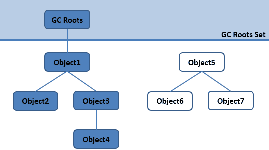

Ch06-Java 之 垃圾收集算法
August 30, 2017
在确定了哪些垃圾可以被回收后，垃圾收集器要做的事情就是开始进行垃圾回收，但是这里面涉及到一个问题是：如何高效地进行垃圾回收。由于 Java 虚拟机规范并没有对如何实现垃圾收集器做出明确的规定，因此各个厂商的虚拟机可以采用不同的方式来实现垃圾收集器，所以在此只讨论几种常见的垃圾收集算法的核心思想。
1. 判断一个对象是否可被回收 #
1.1 引用计数算法 #
引用计数算法给对象添加一个引用计数器，当对象增加一个引用时计数器加 1，引用失效时计数器减 1。引用计数为 0 的对象可被回收。两个对象出现循环引用的情况下，此时引用计数器永远不为 0，导致无法对它们进行回收。正因为循环引用的存在，因此 Java 虚拟机不使用引用计数算法。
public class ReferenceCountingGC {
public Object instance = null;
public static void main(String[] args) {
ReferenceCountingGC objectA = new ReferenceCountingGC();
ReferenceCountingGC objectB = new ReferenceCountingGC();
objectA.instance = objectB;
objectB.instance = objectA;
}
}
1.2 可达性分析算法 #
通过 GC Roots 作为起始点进行搜索，能够到达到的对象都是存活的，不可达的对象可被回收。

Java 虚拟机使用该算法来判断对象是否可被回收，在 Java 中 GC Roots 一般包含以下内容：
- 虚拟机栈中引用的对象
- 本地方法栈中引用的对象
- 方法区中类静态属性引用的对象
- 方法区中的常量引用的对象
2. 垃圾回收算法 #
2.1 标记 - 清除算法 #
标记 - 清除算法 (Mark-Sweep) 这是最基础的垃圾回收算法，之所以说它是最基础的是因为它最容易实现，思想也是最简单的。标记 - 清除算法分为两个阶段：标记阶段和清除阶段。
- 标记阶段的任务是标记出所有需要被回收的对象；
- 清除阶段就是回收被标记的对象所占用的空间；
具体过程如下图所示：

但是它存在两点重要不足：
- 效率问题：标记和清除两个过程的效率都不高；
- 空间问题：标记清除后会产生大量不连续的内存碎片，空间碎片太多可能导致以后在程序运行过程中需要分配较大对象时，无法找到足够的连续内存而不得不再次发出一次垃圾收集动作；
2.2 复制算法 #
复制算法 (Copying) 为了解决标记 - 清除算法中效率问题的缺陷。
它将可用内存按容量划分为大小相等的两块，每次只使用其中的一块； 当这一块的内存用完了，就将还存活着的对象复制到另外一块上面，然后再把已使用的内存空间一次清理掉； 这样一来就不容易出现内存碎片的问题。
具体过程如下图所示：

这种算法虽然实现简单，运行高效且不容易产生内存碎片，但是却对内存空间的使用做出了高昂的代价，因为能够使用的内存缩减到原来的一半。很显然，复制算法的效率跟存活对象的数目多少有很大的关系，如果存活对象很多，那么 Copying 算法的效率将会大大降低。
实际的商业虚拟机会采用这种算法来回收新生代，当然并不是按照 1:1 的比例划分内存空间，而是将内存空间划分为一块比较大的 Eden 空间和两块比较小的 Survivor 空间，每次使用 Eden 和其中一块 Survivor。当回收时，将 Eden 和 Survivor 中还存活着的对象一次性地复制到另一块 Survivor 空间上（理论上，大部分的对象会被回收掉，因此这里会假设另一块 Survivor 空间足够），最后清理掉 Eden 和刚才用过的 Survivor 空间。
HotSpot 虚拟机默认 Eden 和 Survivor 的大小比例是 8:1，当 Survivor 空间不够用时，需要依赖其他内存（这里指老年代）进行分配担保(Handle Promotion)。因此当 Survivor 空间真的不足以存放上一次新生代收集下来的存活对象时，这些对象将直接通过分配担保机制进入老年代。
2.3 标记 - 整理算法 #
复制算法在对象存活率比较高时就要进行比较多的复制操作，效率将会降低，而且需要额外的空间对其分配担保，以应对被使用内存中所有对象都 100% 存活的极端情况，所以老年代一般不能选择这种算法。
标记 - 整理算法 (Mark-Compact) 过程与标记-清除算法一样，但后续步骤不是直接对可回收对象进行清理，而是让所有存活的对象都向一端移动，然后直接清理掉端边界以外的内存。具体过程如下图所示：

2.4 分代收集算法 #
分代收集算法 (Generational Collection) 是目前大部分虚拟机的垃圾收集器采用的算法。
它的核心思想是根据对象存活的生命周期将内存划分为若干个不同的区域。一般情况下将堆区划分为老年代（Tenured Generation）和新生代（Young Generation），老年代的特点是每次垃圾收集时只有少量对象需要被回收，而新生代的特点是每次垃圾回收时都有大量的对象需要被回收，那么就可以根据不同代的特点采取最适合的收集算法。
- 对于新生代会采取
复制算法，因为在新生代中，每次垃圾收集时都会发现大量对象死去，只有少量存活，也就是说仅需要少量的复制操作。 - 对于老年代会采用
标记-清除算法或标记-整理算法，因为对象存活率高，也没有额外空间对它进行分配担保。